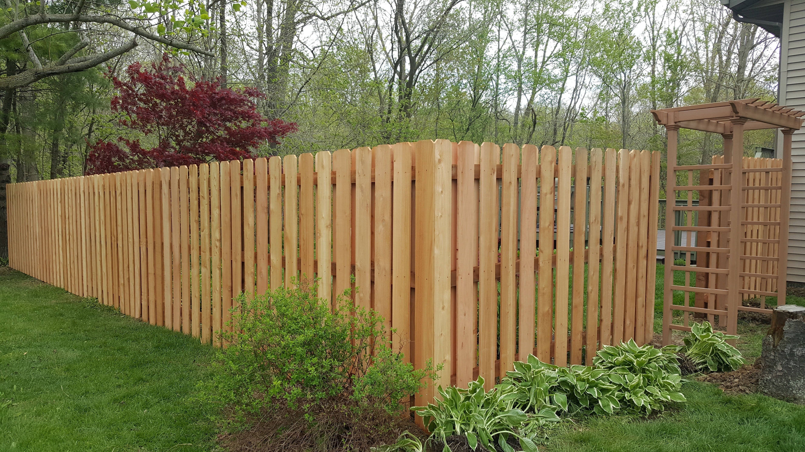

FencingHow to Choose the Right Fencing for Your Property
Chain link, wood, wrought iron, or vinyl — each fence type comes with trade-offs in cost, maintenance, security, and appearance. Here's how to match the right material to your goals.